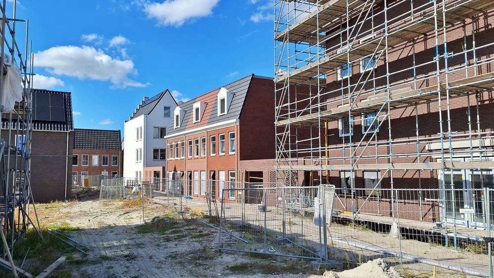

네덜란드 레이우아르던시, 새 주거지구 미덜세이에 '100% 공공 소유' 열망 직접 짓겠다고 제안…새집 1,600채 넘게 공급

붐비는 전력망 부담 덜어 주택 공급 일정 지키려는 구상…요금은 정부 상한보다 고정 20%·변동 5% 낮게, 시의회 11월 25일 결정
네덜란드 프리슬란트주 레이우아르던시 집행부(시장·부시장단)가 새 주거지구 미덜세이(Middelsee)에 지역 열 공급망(열망)을 깔되 시가 직접 개발·건설해 완전히 공공 소유로 두자는 안을 내놨으며, 시의회는 11월 25일 이 안을 논의해 결정한다. 열망은 미덜세이 여러 동네의 새집 1,600채 넘게 열을 대고 나중에 지구 다른 곳으로 넓힐 수 있으며, 시 직접 소유는 집단 열망에 공공 과반 지분을 정한 법에 맞춘 것이다. 시가 내세운 큰 이유는 전력망 포화로, 용량이 모자라 새집과 시설을 늘 연결할 수 없고 미덜세이 주택 건설 일정이 배전회사 리안더르(Liander)의 가용 용량과 맞지 않는 상황에서, 열망이 전력망 부담을 덜면 지금 일정 안에서 집을 더 지을 여유가 생긴다는 조사 결과가 나왔다. 열망은 단계적으로 깔려 2027년 4월 완공 예정인 바이오 기반 주택 48채가 먼저 임시 열원에서 열을 받고, 최종 열원 시설은 철로 옆 스포츠단지 북쪽에 지어 2031년 2분기 가동할 예정이며, 요금은 시의 기존 헤흐테르프(Heechterp) 열망과 같게 하되 시장감독청(ACM)이 정하는 최대 열 요금에서 고정 요금 20%, 변동 요금 5%를 깎아 줄 계획이다. 에버르트 스텔링베르프(Evert Stellingwerf) 지속가능성 담당 부시장은 "시가 처음으로 완전히 공공 소유인 열망을 직접 개발한다"며 요금과 지속가능성, 신뢰성을 시가 쥐고 그 경험을 다른 지역에도 쓰겠다고 말했다. 율리 브라위닝크스(Julie Bruijnincx) 건설·주거 담당 부시장은 시가 해마다 1,000채를 짓겠다는 목표를 세웠고 미덜세이가 레이우아르던과 프리슬란트주 전체에서 가장 큰 주택 건설지라며, 열망이 전력망 부담을 덜어 새집 지을 자리를 만드는 데 도움이 된다고 밝혔다.
시민에너지 관점
새집 1,600채 넘는 지구의 열을 시가 직접 소유하고 요금을 법정 상한보다 고정 20%·변동 5% 낮추겠다는 것은, 공공 소유가 요금 결정권을 주민 쪽으로 가져오는 수단이라는 것을 보여 준다. 스웨덴에서도 많은 도시의 지역난방을 시가 소유한 에너지회사가 운영해 왔고, 네덜란드는 아예 법으로 집단 열망의 공공 과반 지분을 정했다. 지자체가 큰 망 사업을 감당할 수 있겠느냐는 걱정에는, 첫 입주 48채부터 임시 열원으로 시작해 2031년 최종 열원까지 단계적으로 키우는 이번 설계가 답이 된다. 국내 신도시·택지 개발에서도 열과 전기 기반시설을 민간 사업자에게 통째로 넘기지 말고, 지자체와 주민이 지분을 갖는 공공개발 방식을 계획 단계부터 넣어야 한다.
출처: Omroep Leeuwarden 2026-11-04 기자 미표기 원문 보기
オランダ・レーワルデン市、新住宅地区ミデルセーに「100%公有」の熱供給網を自ら建設する案…新築1,600戸超に供給
混雑する電力網の負担を減らし住宅供給の日程を守る構想…料金は国の上限より固定20%・変動5%安く、市議会が11月25日に決定
オランダ・フリースラント州レーワルデン市の執行部（市長・助役団）は、新しい住宅地区ミデルセー（Middelsee）に地域の熱供給網を敷設し、市が自ら開発・建設して完全な公有とする案を示した。市議会は11月25日にこの案を審議し決定する。熱供給網はミデルセーの複数の街区の新築住宅1,600戸超に熱を供給し、将来は地区の他の場所にも広げられる。市の直接所有は、集合熱供給網について公的な過半数出資を定めた法律に沿ったものだ。市が挙げる大きな理由は電力網の逼迫で、容量不足のため新しい住宅や施設を常に接続できるわけではなく、ミデルセーの住宅建設の日程も配電会社リアンダー（Liander）の利用可能な容量と合っていない。こうした中、熱供給網が電力網の負担を減らせば現在の日程の中でより多くの住宅を建てる余地が生まれるとの調査結果が出た。熱供給網は段階的に敷設され、2027年4月完成予定のバイオベース住宅48戸がまず仮設の熱源から熱を受け、最終的な熱源施設は線路脇のスポーツ施設の北側に建設して2031年第2四半期に稼働する予定だ。料金は市の既存のヘーヒテルプ（Heechterp）熱供給網と同じとし、消費者・市場庁（ACM）が定める最大熱料金から固定料金を20%、変動料金を5%割り引く計画だ。エーフェルト・ステリングウェルフ（Evert Stellingwerf）持続可能性担当助役は「市として初めて、完全に公有の熱供給網を自ら開発する」と述べ、料金と持続可能性、信頼性を市が握り、その経験を市内の他の地域にも生かすとした。ユリー・ブライニンクス（Julie Bruijnincx）建設・住宅担当助役は、市が毎年1,000戸を建てる目標を掲げ、ミデルセーがレーワルデンとフリースラント州全体で最大の住宅建設地であるとして、熱供給網が電力網の負担を減らし新築住宅の余地をつくるのに役立つと語った。
市民エネルギーの視点
新築1,600戸を超える地区の熱を市が直接所有し、料金を法定上限より固定20%・変動5%下げるという方針は、公的所有が料金の決定権を住民の側へ引き寄せる手段であることを示している。スウェーデンでも多くの都市の地域暖房を市が所有するエネルギー会社が運営してきたし、オランダは法律で集合熱供給網の公的な過半数出資を定めた。自治体に大きな網の事業が担えるのかという懸念には、最初の入居48戸から仮設熱源で始め、2031年の最終熱源まで段階的に育てる今回の設計が答えになる。韓国の新都市・宅地開発でも、熱と電気の基盤施設を民間事業者に丸ごと委ねるのではなく、自治体と住民が持ち分を持つ公共開発方式を計画段階から組み込むべきだ。
出典: オムロップ・レーワルデン（Omroep Leeuwarden） 2026-11-04 記者名なし 原文を読む
荷兰吕伐登市提议在新住宅区米德尔塞自建"100%公有"供热管网…为1,600多套新房供热
意在减轻拥挤电网负担、守住住房供应进度…热价比国家上限固定部分低20%、可变部分低5%，市议会11月25日表决
荷兰弗里斯兰省吕伐登市执行委员会（市长和副市长团）提出，在新住宅区米德尔塞（Middelsee）铺设区域供热管网，由市政府自行开发建设，并完全保持公有；市议会将于11月25日讨论并表决该提案。这一管网将为米德尔塞多个街区的1,600多套新建住宅供热，今后还可扩展到该区其他地方；市政府直接持有，是为了符合规定集体供热管网须由公共部门持多数股权的法律。市政府提出的主要理由是电网拥堵：由于容量不足，新住宅和设施并非总能接入电网，米德尔塞的住宅建设进度也与配电公司Liander的可用容量不匹配，而研究显示，供热管网能减轻电网负担，使在现有进度内多建住房成为可能。管网将分阶段铺设，预计2027年4月竣工的48套生物基住宅将先由临时热源供热，最终热源设施建在铁路旁、体育园区北侧，预计2031年第二季度投入使用；热价与市里现有的海赫特普（Heechterp）供热管网相同，并在消费者与市场管理局（ACM）规定的最高热价基础上，固定费用优惠20%、可变费用优惠5%。负责可持续发展的副市长埃弗特·斯特林韦夫（Evert Stellingwerf）说，"这是市政府第一次自行开发完全公有的供热管网"，市里将掌握价格、可持续性和可靠性，并把积累的经验用到吕伐登其他地区。负责建设与住房的副市长朱莉·布劳宁克斯（Julie Bruijnincx）表示，市里的目标是每年建1,000套住房，米德尔塞是吕伐登乃至弗里斯兰省最大的住房建设区，供热管网有助于减轻电网压力、为新住房腾出空间。
市民能源视角
由市政府直接拥有1,600多套新房所在街区的供热，并把热价压到法定上限之下，固定部分低20%、可变部分低5%，说明公有制是把定价权拉回居民一边的手段。瑞典许多城市的区域供热长期由市属能源公司经营，荷兰更是用法律规定集体供热管网须由公共部门持多数股权。对于地方政府能否承担大型管网项目的担忧，这次从首批入住的48套住房用临时热源起步、到2031年建成最终热源逐步扩展的设计就是答案。韩国的新城和宅地开发也不应把热力和电力基础设施整体交给民间企业，而应从规划阶段就纳入地方政府与居民持股的公共开发方式。
来源: 吕伐登广播台（Omroep Leeuwarden） 2026-11-04 未署名 查看原文
Leeuwarden proposes building a fully publicly owned heat network for its new Middelsee district — supplying more than 1,600 new homes
The plan aims to ease pressure on a congested power grid and keep housebuilding on schedule; heat would be priced 20% below the regulated cap on fixed charges and 5% below on variable charges, and the council decides on November 25
The executive board of the Dutch city of Leeuwarden, in Friesland, has proposed laying a district heat network in its new residential district of Middelsee that the city would develop and build itself and keep entirely in public hands, and the city council will debate and decide on the plan on November 25. The network would heat more than 1,600 new homes in several Middelsee neighbourhoods and could later be extended to other parts of the district, and direct municipal ownership is in line with legislation on collective heat networks that requires a public majority stake. The main reason the city gives is grid congestion: limited capacity means new homes and facilities cannot always be connected, and the Middelsee building schedule does not match the capacity available from distribution company Liander, while research shows that a heat network can ease the load on the electricity grid and make room for more homes within the current schedule. The network would be built in phases, with the first 48 bio-based homes, due for completion in April 2027, initially heated from a temporary heat plant, and the permanent heat plant, beside the railway north of the sports complex, expected to start operating in the second quarter of 2031; usage charges would match the city's existing Heechterp heat network, with discounts of 20% on the fixed charge and 5% on the variable charge relative to the maximum heat tariffs set by the Authority for Consumers and Markets (ACM). Alderman for sustainability Evert Stellingwerf said that "for the first time, we as a municipality are developing a heat network that is entirely in public hands," adding that the city would keep control over affordability, sustainability and reliability and use the experience elsewhere in Leeuwarden. Alderwoman for building and housing Julie Bruijnincx said the city aims to build 1,000 homes a year and that Middelsee is the largest housing site in Leeuwarden and all of Friesland, and that the heat network will help ease pressure on the grid and make room for new homes.
Citizen Energy View
A city that owns the heat supply for a district of more than 1,600 new homes and promises prices 20% below the regulated cap on fixed charges and 5% below on variable charges shows that public ownership is a way to move pricing power towards residents. In Sweden, district heating in many cities has long been run by municipally owned energy companies, and the Netherlands has gone as far as writing a public majority stake in collective heat networks into law. To the worry that a municipality cannot handle a large network project, the answer is this phased design, starting with 48 homes on a temporary heat source and growing to a permanent plant in 2031. In Korea's new towns and housing developments, too, heat and power infrastructure should not be handed wholesale to private operators; public development in which local governments and residents hold stakes should be built in from the planning stage.
Source: Omroep Leeuwarden 2026-11-04 No byline Read the original